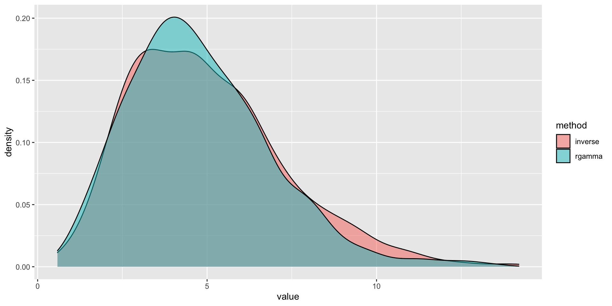

Microsimulation 2
EPIB 676 session 8, McGill University
1/27/23
R packages
Today: Improving efficiency
General coding practices
Simulation-specific methods
Top 5 tips for efficient programming
From Efficient R Programming by Gillespie and Lovelace
Be careful never to grow vectors.
Vectorise code whenever possible.
Use factors when appropriate.
Avoid unnecessary computation by caching variables.
‘Byte compile’ packages for an easy performance boost.
Pre-allocate vectors, matrices, arrays
Make a proper-sized object (all NAs or 0s) before loop to store output.
Monte Carlo to estimate \(\pi\)
Source: Berk Orbay
Unvectorized example
Vectorized example
monte_carlo_vec = function(N) {
4*sum(sqrt(runif(N)^2 + runif(N)^2) <=1) / N
}
system.time(int_est <- monte_carlo_vec(N)) user system elapsed
0.015 0.001 0.017 [1] 3.146512Using sum over a comparison operator with <, >, <=, or >- more efficient than for loop and if statement
runif,^,+each called just 2 times on a vector, not 2N times on a single number~80X faster!
Apply family of functions
Use when: performing same operation on:
all entry in vector
all rows or all columns of matrix (or array)
all elements in list
Apply() visualized

Source: Datacamp
Other apply-like functions
lapply, simplify2array; tapply, and convenience functions sweep and aggregate.
Caching variables
If you will re-use the same value over and over, save it to a variable instead of re-calculating it.
user system elapsed
0.120 0.001 0.122 user system elapsed
0.004 0.000 0.004 ~30x faster!
Use R’s byte compiler
Not sure exactly what it does but can make code faster, particularly with loops
Use factors when appropriate
Character-type data can be stored as strings or factors. If you have several values from a limited set of possible values, a factor is more memory efficient.
RCCP for C++ code
If a specific part of your code is especially slow, can re-write in C++ (more info in Advanced R by Hadley Wickham)
Don’t optimize everything!
“Programmers waste enormous amounts of time thinking about, or worrying about, the speed of noncritical parts of their programs, and these attempts at efficiency actually have a strong negative impact when debugging and maintenance are considered.”
— Donald Knuth.
Readability > efficiency 90% of the time
Decide what to make efficient with profiling
Profiling code with Profvis
http://rstudio.github.io/profvis/index.html
Must be run in RStudio
Today: Improving efficiency
General coding practices
Simulation-specific methods
Review: Tracking individuals state transition microsim
For each variable, use \(n_i \times n_t\) (or \(n_i \times (n_t+1)\)) matrix where \(n_i\) is the number of individuals and \(n_t\) is the number of cycles.
\(M_m[i,t]\) matrix gives state of individual \(i\) after cycle \(t\)
\(M_c[i,t]\) matrix gives costs accrued by individual \(i\) during cycle \(t\)
\(M_e[i,t]\) matrix gives the health accrued accumulated by individual \(i\) during cycle \(t\)
Vectorization in microsimulation
Preallocate all matrices/arrays
Generate baseline characteristics for everyone at once
Sampling rows from data table at once
Generate random variables
Vectorization in microsimulation
Where possible, use linear algebra to compute calculations for the whole cohort at once
- Multiplying, adding, subtracting, exponentiating matrices and vectors
In discrete time model, transition all individuals through each cycle simultaneously
- Draw random variables for whole cohort as a vector
- See Appendix D of Krijkamp et. al. tutorial
How many individuals to simulate?
As number of individuals \(N_i \rightarrow \infty\), variance in population-level estimate \(\rightarrow 0\).
Goal: enough individuals that variance between strategies attributable to Monte Carlo variability is trivial
Depends on the model + use case
Two ways to assess:
Check that Monte Carlo Standard Error small enough:
sd(cost_stratA - cost_stratB)/sqrt(n.i)Generate 3x \(N_i\) individuals, divide into thirds, look at percent difference in outcomes
Variance reduction technique
Efficient coding aims to reduce the time of each simulation run
Variance reduction aims to reduce the number of individuals needed for a stable, low-error estimate
Gains from simulating 10% fewer individuals \(\approx\) simulating each individual 10% faster
Simulate cohort in all strategies
Sample baseline characteristics once, then simulate individuals under each alternative strategy
Otherwise, variance in strategy outcomes partially due to differences in the simulated populations
Antithetic variates
Suppose we aim to estimate \(\mu=E[X]\) and we have two samples drawn from \(X: X_1 \text{ and } X_2\). Generate estimate as:
\[ \hat{\mu}=(E[X_1]+E[X_2])/2 \]
Note:
\[ Var[\hat{\mu}] = \frac{Var[X_1] + Var[X_2] + 2Cov[X_1,X_2]}{4} \]
Observe: smaller \(Cov[X_1,X_2]\), means smaller \(Var[\hat{\mu}]\).
Antithetic variates
Generate two negatively-correlated sets of random variables: U, original set, and V, antithetic set.
If U~Unif(0,1), V = 1 - U
If U~Norm(0,1), V = - U
For other distributions, can use the inversion method to generate antithetic variates (if inverse of CDF exists)
Inversion transform: CDF in reverse
\[ F_X(x) = P(X \leq x) = p \qquad \qquad F^{-1}_X(p) = x \]
Source: Hedley (heds.nz)
Inverse transform method in R
pnorm (or pgamma, plnorm, etc) takes \(x\) and gives you \(p\)
qnorm (or qgamma, qlnorm, etc) takes \(p\) and gives you \(x\)
Antithetic variates example: Naive method
Simulating heads or tails coinflip
Example: antithetic variates
#Coin flip with antithetic variates
unif_vec<-runif(n/2)
#Normal process
x_1<- unif_vec < 0.3
#Antithetic process
x_2<- (1-unif_vec) < 0.3
h_or_t_av <- (x_1 + x_2)/2
mu=mean(h_or_t_av)
SE=1.96*sd(h_or_t_av)/sqrt(n/2)
print(c(Mean=mu,SE=SE,Lower=mu-SE,Upper=mu+SE)) Mean SE Lower Upper
0.30800000 0.02133692 0.28666308 0.32933692 Common random numbers
When modeling >1 policy, using the same random variables for each reduces variance, improving estimation of the incremental outcomes (costs, QALYs).
Random variables must have the same purpose in both systems (synchronized)
Reduces variance in the difference between two random variables by maximizing the covariance:
\[ Var[X_2 - X_1] = Var[X_1] + Var[X_2] - 2Cov[X_1,X_2] \]
Example: naive method
# Choosing stock options to buy based on expected payoff
#Same EC function that returns payoff vector
payoff_EC<-function(S_0=100,K=100,vol=0.25,T_years=1,r=0.02,z_val){
return(pmax(S_0*exp((r-0.5*vol^2)*T_years + vol*z_val*sqrt(T))-K,0)*exp(-r*T_years))
}
n<-10^4 #Number of instances
#Naive method.
payoff_1<-payoff_EC(r=0.01,z_val=rnorm(n))
payoff_2<-payoff_EC(r=0.06,z_val=rnorm(n))
diff_vec<-payoff_1 - payoff_2
mu_diff<-mean(diff_vec)
SE=1.96*sd(diff_vec)/sqrt(n)
print(c(Diff=mu_diff,SE=SE,Lower=mu_diff-SE,Upper=mu_diff+SE)) Diff SE Lower Upper
-2.4796863 0.5024489 -2.9821352 -1.9772374 Source: Berk Orbay
Example: common random numbers
#CRN Method
z_val<-rnorm(n)
payoff_1<-payoff_EC(r=0.01,z_val=z_val)
payoff_2<-payoff_EC(r=0.06,z_val=z_val)
diff_vec<-payoff_1 - payoff_2
mu_diff<-mean(diff_vec)
SE=1.96*sd(diff_vec)/sqrt(n)
print(c(Diff=mu_diff,SE=SE,Lower=mu_diff-SE,Upper=mu_diff+SE)) Diff SE Lower Upper
-2.43721329 0.04602975 -2.48324304 -2.39118355 Source: Berk Orbay
Challenge of rare events
Conditional Monte Carlo
Recap
Improve microsim efficiency by reducing duration of runs or reducing total runs
First get your model running, if needed, use profiler to decide where to optimize
- Your time value >>>> computer time value!
Note on indexing (Assignment 2)
Indexing on assignment may not match slides
You can change it as long as you are consistent
Some matrices/vectors need to include t=0 (i.e. model trace), others don’r
- There will always be one less transition than time points
Logistics
- Assignment 2 due 11:59pm today
- Assignment 3 due 11:59 Friday, Feb 3
Question 1 available now
Will send email when question 2 available (tomorrow at the latest)
- Office hours in conference room #1103 starting now